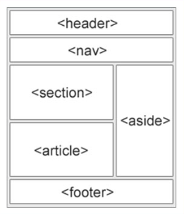

Requisitos do projeto final (Entrega: até 25/06 às 23:59)
Fazer pelo menos 1 página sore o assunto que quiser e achar relevante. (Ao menos
1 documento HTML e 1 documento CSS)
Utilize o atalho (!) no vs code para ter a base do documento html.
Faça a conexão do documento HTML e CSS.
(Opcional) Utilizar um site externo para pegar ícones
Utilizar a estruturação básica vista nas aulas: "head, header, nav, body,
footer". (Use o aside se quiser, se não, sem problemas)

No HTML
Utilizar ao menos 1 tag h1 a h6 para os títulos e partes de destaque
maior.
Utilizar ao tags p ou span para textos.
Utilizar ao tags de lista ol ou ul.
Utilizar a menos 1 tag âncora levando para um site externo ou interno.
Utilizar a o menos 1 tag img com a propriedade alt.
No CSS
Usar seletores para estilizar partes especificas.
(Opcional) Usar o :root para facilitar o uso de cores.
Utilizar as propriedades para aplicar cor, alterar o tamanho, colocar borda, espaçamento e todas as outras formas para estilizar.
Usar display flex para fazer layout flexíveis.
Usar o efeito hover ao menos 1 vez para dar ideia de interação pro usuário.
FAZER O SITE RESPONSIVO COM MEDIA QUERIE
Vale boa parte da avaliação.
recomendo fazer o site e estilizar primeiro a versão desktop e usando o inspecionar elementos para facilitar a visualização e estilização da versão mobile.
Observações finais:
Esse é o SEU projeto final falando do assunto que desejar, faça um site visualmente agradável como se fosse para uma empresa ou cliente e deixe ele bem completo e o mais interessante possível. Pode até usar de portifólio se você gostar bastante.